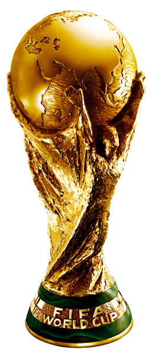
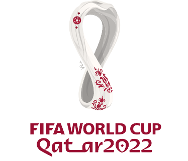

FIFA 월드컵(영어: FIFA World Cup)은 축구 국제 기구인 국제 축구 연맹(FIFA)에 가맹한 축구 협회(연맹)의 남자 축구 국가대표팀만 참가하는 국제 축구 대회이다.
일반적으로 월드컵 축구나 월드컵이라고도 한다.4년마다 열리는 월드컵은 1930년에 첫 대회가 열렸다. 1942년과 1946년 대회는 제2차 세계 대전으로 인하여 열리지 못했다. 대회는 예선 무대와 본선 무대 등 두 부분으로 나뉜다.예선 무대는 본선에 진출할 32팀을 가려내기 위해 본선 보다 3년 일찍 시작한다. 현재 본선은 개최국 경기장에서 한 달 남짓 32개 팀이 우승을 놓고 경쟁하는 방식으로 진행된다. 월드컵 결승전은 세계에서 가장 많은 사람이 시청하는 단일 스포츠 경기이다. 어림잡아 7억 1,510만 명이 2006년 FIFA 월드컵 결승전을 시청했다고 한다.

2022년 11월 20일∼12월 18일까지 중동의 카타르에서 치러질 22회 월드컵 대회이다.
사상 최초로 겨울에 치러지는 월드컵이며, 2002년 한일 월드컵 이후 20년 만에 아시아 대륙에서 펼쳐지게 될 대회이다. 국제축구연맹(FIFA) 지아니 인판티노 회장은 2018년 7월 14일 모스크바 루즈니키 스타디움에서 2018 러시아 월드컵 결산 기자회견을 열고, "카타르 월드컵은 2022년 11월 21일 개막식을 열고, 12월 18일 결승전을 치르기로 결정했다."며 차기 대회 일정을 공개했다.